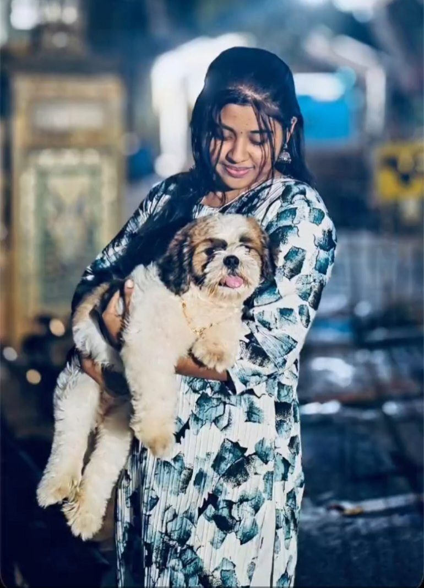
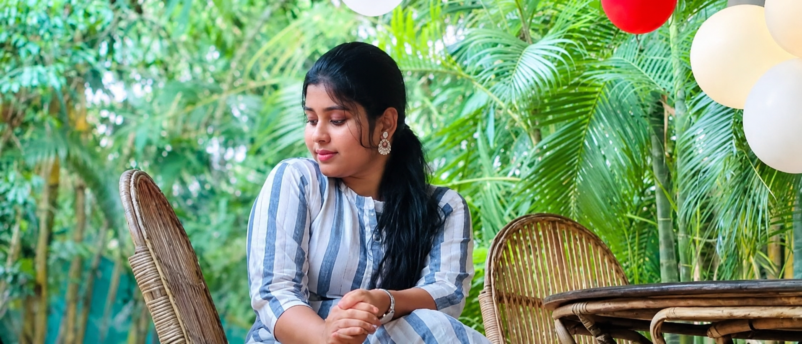

More Than Words Can Explain
I wish you could understand how much your existence means to me. You're someone I never expected to become this important, but somehow, you've become one of my favourite parts of life.
I may not always express it, but I notice the little things about you. Your random messages, your silly jokes, your caring nature, and the way you make ordinary moments feel unforgettable.
Sometimes I get busy, sometimes I go quiet, but please never mistake my silence for a lack of care. You're still someone I think about, someone whose happiness genuinely matters to me.
I hope you never feel alone in this world. I hope you always find the reasons to smile, courage to chase your dreams, and someone beside you when life gets difficult.
And if you ever question your place in my life, remember this:
- You're someone I never want to replace.
- Someone whose memories I'll always treasure.
- Someone I'll always wish the best for.
- And someone I'll never regret meeting.
I don't know how long life will keep our paths together, but I hope we collect enough beautiful memories to smile about even from years on.
Because some friendships aren't just meant to be a part of life; they're meant to stay in the heart forever.
I'm grateful for you, bestie. More than you know. Today, tomorrow, and always. 🤍

The Comfort of Having You
You may never truly understand how much you mean to me.
Thank you for being a part of my life, for the smiles you unknowingly gave me, and for the memories that still make my heart feel warm.
Some people come into our lives and leave without changing anything. But you... you changed many things in me. You made ordinary days feel special.
I don't expect perfection from you. I don't expect you to always have the right words or always know what I'm feeling. I just hope you know that your existence has been a comfort in ways I can't explain.
No matter where life takes us, a part of my heart will always be grateful for you.
“ If one day we become strangers, I'll still smile whenever I remember the chapter of my life that had you in it “.
And if you ever wonder whether you mattered to someone, the answer is yes. You mattered to me.
